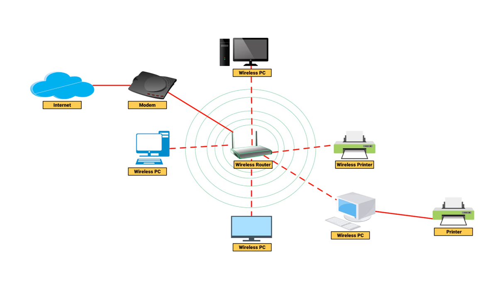
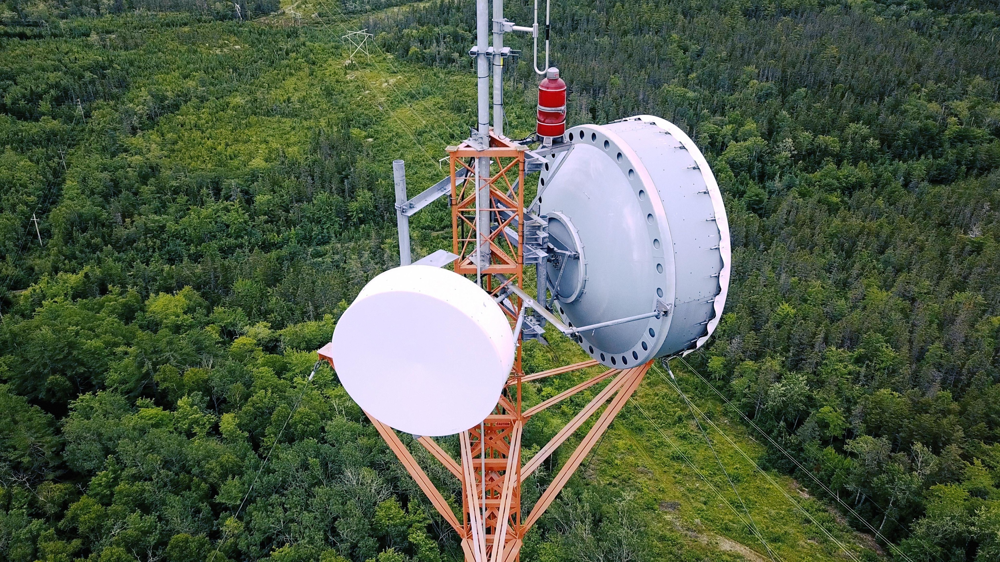
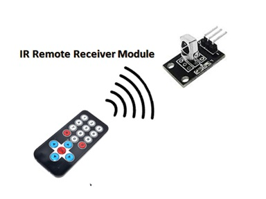
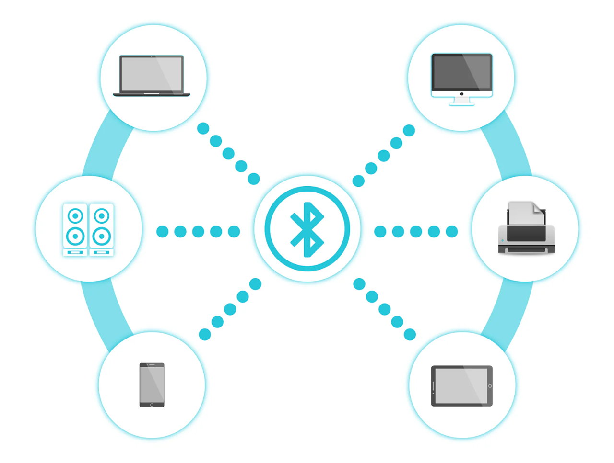
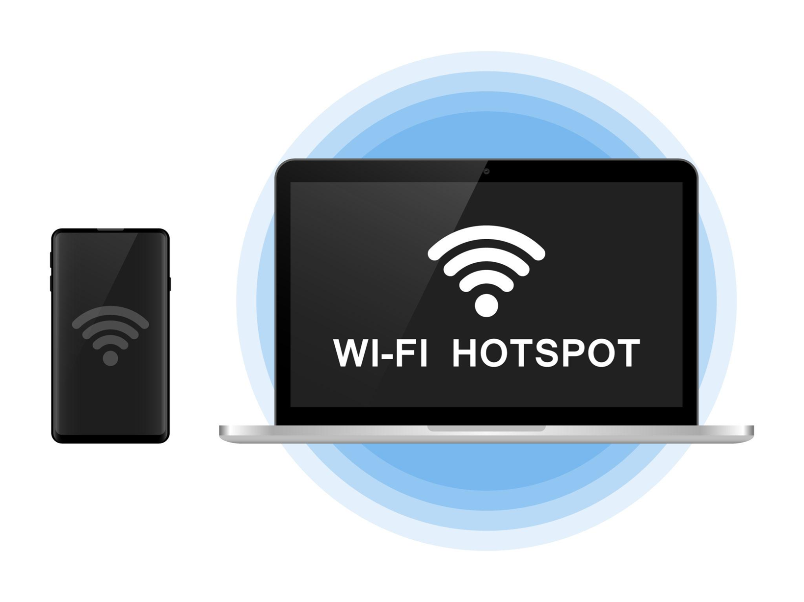

Media transmisi wireless adalah media pengiriman data yang tidak menggunakan kabel dalam proses transmisinya. Teknologi ini memanfaatkan gelombang elektromagnetik yang dipancarkan oleh antena pemancar dan diterima oleh antena penerima.
Penjelasan lainnya, media transmisi wireless atau yang disebut juga unguided transmission adalah suatu media transmisi data yang tidak memerlukan kabel dalam proses transmisinya. Media ini memanfaatkan antena untuk transmisi di udara, ruang hampa udara, atau air.

Ilustrasi komunikasi jaringan wireless
Pada konfigurasi ini antena pemancar memfokuskan sinyal ke satu arah menuju antena penerima.
Pada konfigurasi ini sinyal disebarkan ke segala arah sehingga dapat diterima oleh banyak perangkat.

Gelombang mikro digunakan dalam komunikasi jarak jauh seperti jaringan telekomunikasi dan komunikasi antar menara BTS.

Infrared digunakan untuk komunikasi jarak dekat seperti remote TV dan perangkat elektronik lainnya. Infrared adalah generasi pertama dari teknologi koneksi nirkabel yang digunakan untuk perangkat mobile. InfraRed sendiri, merupakan sebuah radiasi gelombang elektromagnetis dengan panjang gelombang lebih panjang dari gelombang merah, namun lebih pendek dari gelombang radio, yakni 0,7 mikrom sampai dengan 1 milimeter. Sinar infra merah memiliki jangkauan frekuensi 1011 Hz sampai 1014 Hz atau daerah panjang gelombang 10-4 cm.
Proses koneksi infrared bekerja dengan cara yang sangat sederhana. Ketika terjadi pertemuan di antara dua buah device dengan interkoneksi tersebut, maka akan terjadi sebuah pengenalan secara anonim diantara kedua device tersebut.
Pengenalan ini kemudian berlanjut ke arah yang lebih dalam lagi dimana kedua device tersebut meyetujui untuk memberi “nama sementara” pada masing-masing device sehingga protokol infrared mengenali kedua belah pihak dan melakukan transfer data atau untuk sekedar mempertahankan koneksihingga perintah terakhir dijalankan. Tentunya hal ini memudahkan koneksi untuk device dengan interkoneksi infrared karena tidak diperlukannya proses pairing yang merepotkan.
Komunikasi infra merah dicapai dengan menggunakan transmitter/receiver (transceiver) yang modulasi cahaya yang koheren. Transceiver harus berada dalam jalur pandang maupun melalui pantulan dari permukaan berwarna terang misalnya langit-langit rumah. Satu perbedaan penting antara transmisi infra merah dan gelombang mikro adalah transmisi infra merah tidak dapat melakukan penetrasi terhadap dinding, sehingga masalah-masalah pengamanan dan interferensi yang ditemui dalam gelombang mikro tidak terjadi. Selanjutnya, tidak ada hal-hal yang berkaitan dengan pengalokasian frekuensi dengan infra merah, karena tidak diperlukan lisensi untuk itu. Pada handphone dan PC, media infra merah ini digunakan untuk mentransfer data tetapi dengan suatu standar atau protocol tersendiri yaitu protocol IrDA. Cahaya infra merah merupakan cahaya yang tidak tampak. Jika dilihat dengan spektroskop cahaya maka radiasi cahaya infra merah akan nampak pada spektrum elektromagnetik dengan panjang gelombang diatas panjang gelombang cahaya merah
Dalam kehidupan sehari-hari sinar inframerah digunakan pada remote televisi. Remote TV mentransmisikan kode instruksi yang dibawa oleh sinar inframerah yang nantinya akan diterjemahkan oleh receiver dalam TV.

Bluetooth merupakan teknologi komunikasi nirkabel dengan frekuensi 2.4 GHz yang biasanya digunakan untuk perangkat seperti headset, speaker, dan smartphone.

Wi-Fi adalah teknologi jaringan nirkabel yang digunakan untuk menghubungkan perangkat seperti laptop, smartphone, dan komputer ke internet melalui access point.
Satelit komunikasi digunakan untuk menghubungkan jaringan komunikasi jarak sangat jauh seperti antar negara dan wilayah terpencil.
Media transmisi wireless memungkinkan komunikasi tanpa menggunakan kabel dengan memanfaatkan gelombang elektromagnetik.
Teknologi wireless yang umum digunakan antara lain microwave, infrared, bluetooth, Wi-Fi, dan satelit.
1. Media transmisi tanpa kabel disebut...
Kabel2. Teknologi jaringan untuk internet tanpa kabel adalah...
Wi-Fi3. Teknologi wireless jarak dekat untuk headset adalah...
Infrared